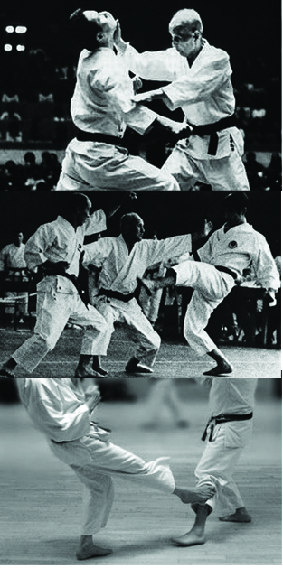

Hironori Ōtsuka trouvait le karaté shotokan un peu limité. Il pensait que l'apport du ju-jitsu pouvait enrichir
cet art martial et lui assurer un meilleur avenir. Il reprochait au karaté Shotokan de décomposer sa technique en
deux temps : d'abord, une défense (généralement par blocage) ; ensuite, une attaque.
Mais dans les arts
martiaux japonais, la défense et l'attaque ne sont jamais séparées, la défense pouvant même parfois être une
attaque.
Ce que le fils d'Ōtsuka résume ainsi : go no sen, on frappe après le début du mouvement adverse, sen no sen, on
attaque à l'instant où l'adversaire pense à sa technique, et avant son mouvement (anticipation). En appliquant ces
deux principes (go no sen et sen no sen), Ōtsuka développa une méthode de karaté originale où l'esquive était
utilisée de préférence au blocage. Il énonça aussi trois principes, qui orientent toute la pratique et constituent
le credo technique du wadō-ryū : ten-i (« le déplacement »), ten-tai (« la rotation du corps »), ten-gi («
l'application de la technique avec blocage et contre-attaque simultanés »). Sur cette base, le pratiquant
développera les sensations de : nagasu, inasu et noru. ce qui sous entend, Nagasu: Aspiration de l'attaque &
retrait du corps. Inasu: Déviation de l'attaque & rotation du corps. Noru: Accompagnement de l'attaque dans un
mouvement liant défense et attaque & rotation du corps.
En conclusion, l'esquive est accompagnée d'un atémi du poing ou du pied et souvent se concluant par une
projection au sol.
